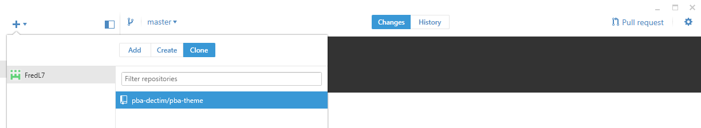
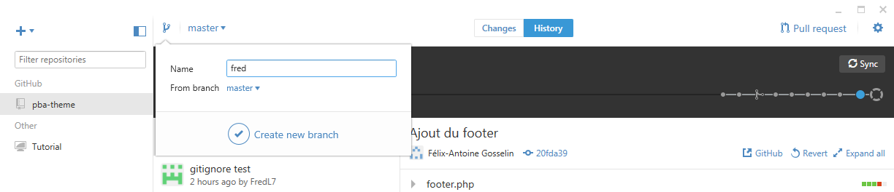
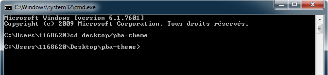

Fonctionnement pour l'école
Vous n'êtes pas à l'école? Voyez le tutoriel pour la maison
Étape 1 - Github
Téléchargez github pour desktop puis installez-le sur votre ordinateur. Suivez les étapes Log in, Configure et sautez l'étape Repositories. Allez dans la section dashboard, en cliquant sur le + en haut à gauche, sélectionnez clone pour cloner tous les éléments de github où vous le désirez sur votre ordinateur ou sur votre clé usb.
Application github pour desktop {kind=link}
Ainsi, vous avez une copie du repository de github sur lequel vous pouvez travailler. Ensuite, si ce n'est pas déjà fait, il est recommandé de créer une nouvelle branche au projet. En travaillant sur une copie et non pas sur la branche principale (master), il est moins probable de faire une erreur qui pourrait compromettre le projet.
{kind=link}
Vous êtes maintenant prêts à passer à la prochaine étape.
Étape 2 - Utilisation de SASS
Si vous n'avez pas l'intention d'utiliser de SASS, vous pouvez passer directement à l'étape suivante. Autrement, téléchargez l'application personnalisée ci-dessous
modules-sass-gulp.cmdCopiez le fichier à la racine du dossier clone de github que vous avez installé précédemment et lancez-le. Gulp et de ses modules sy installeront automatiquement et vous serez prêts à utiliser l'invite de commande.
Ouvrez l'invite de commande (WINDOWS+R, cmd, ENTER) puis ciblez le dossier ou se trouve votre dossier clone de GihHub à l'aide de la commande «cd».
{kind=link}
À partir de là, vous pourrez utilisez les différentes commandes de gulp et celles que nous avons personnalisées pour notre projet.
- gulp - Affiche les commandes disponibles.
- gulp styles - Compile fichiers SASS dans le dossier sass en fichiers CSS.
- gulp watch - Exécute la fonction gulp styles automatiquement à chaque changements dans les fichiers .scss, pour arrêter le watch, utilisez CTRL+C.